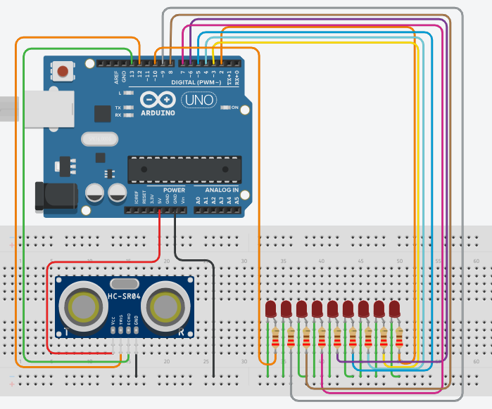

Ultrasonic Distance Indicator using LEDs
This project demonstrates how to measure distance using an ultrasonic sensor and visualize it using multiple LEDs. As an object gets closer, more LEDs light up, creating a simple and effective distance indicator system.
BeginnerComponents Required
- Arduino Uno
- HC-SR04 Ultrasonic Sensor
- 9 LEDs
- 9 × 220Ω Resistors
- Breadboard
- Jumper Wires
- USB Cable
Circuit Connections
Follow the steps below to connect the ultrasonic sensor and LEDs to the Arduino board. Ensure proper connections before powering the circuit.
- Connect VCC of HC-SR04 to 5V on Arduino.
- Connect GND of HC-SR04 to GND on Arduino.
- Connect TRIG pin to digital pin 12.
- Connect ECHO pin to digital pin 13.
- Connect LEDs to digital pins 2 to 10 (via resistors).
- Connect all LED cathodes to GND.

The ultrasonic sensor measures distance, and based on that value, the Arduino lights up a number of LEDs to indicate how close the object is.
Arduino Code
/*
Project: Ultrasonic LED Distance Indicator
description: Measure distance using HC-SR04 and display it using LEDs.
Components:
- Arduino Uno
- HC-SR04 Ultrasonic Sensor
- 9 LEDs
- Resistors
- Breadboard
- Jumper Wires
Author: Circuit Creation RN
*/
const int trigPin = 12;
const int echoPin = 13;
const int ledPins[] = {10, 9, 8, 7, 6, 5, 4, 3, 2};
const int ledCount = 9;
void setup() {
pinMode(trigPin, OUTPUT);
pinMode(echoPin, INPUT);
for (int i = 0; i < ledCount; i++) {
pinMode(ledPins[i], OUTPUT);
}
Serial.begin(9600);
}
void loop() {
long duration;
int distance;
digitalWrite(trigPin, LOW);
delayMicroseconds(2);
digitalWrite(trigPin, HIGH);
delayMicroseconds(10);
digitalWrite(trigPin, LOW);
duration = pulseIn(echoPin, HIGH);
distance = duration * 0.034 / 2;
int ledsToLight = map(distance, 5, 30, ledCount, 0);
ledsToLight = constrain(ledsToLight, 0, ledCount);
for (int i = 0; i < ledCount; i++) {
if (i < ledsToLight) {
digitalWrite(ledPins[i], HIGH);
} else {
digitalWrite(ledPins[i], LOW);
}
}
Serial.print("Distance: ");
Serial.print(distance);
Serial.println(" cm");
delay(100);
}
Upload the Code
- Connect Arduino to your computer.
- Open Arduino IDE and paste the code.
- Select correct board and port.
- Click Upload.
- Open Serial Monitor to view distance readings.
Code Explanation
This project reads distance using ultrasonic waves and visualizes it using LEDs.
Trigger and Echo
The TRIG pin sends an ultrasonic pulse, and the ECHO pin receives it back after reflection.
Distance Calculation
distance = duration * 0.034 / 2 converts time into distance in cm.
LED Mapping
The map() function converts distance into number of LEDs.
Closer object = more LEDs ON.
Loop Logic
A loop turns ON LEDs based on distance and turns OFF the rest.
Common Mistakes & Troubleshooting
- No LED lighting: Check wiring and resistors.
- Wrong distance: Ensure TRIG and ECHO pins are correct.
- Unstable readings: Avoid loose wires.
- Upload error: Select correct board and COM port.
What You Learned
- How ultrasonic sensors measure distance
- Using multiple LEDs as output indicators
- Mapping sensor values to outputs
- Basic Arduino programming logic